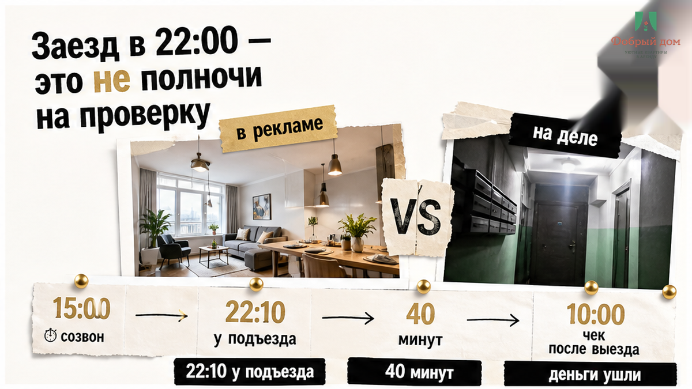
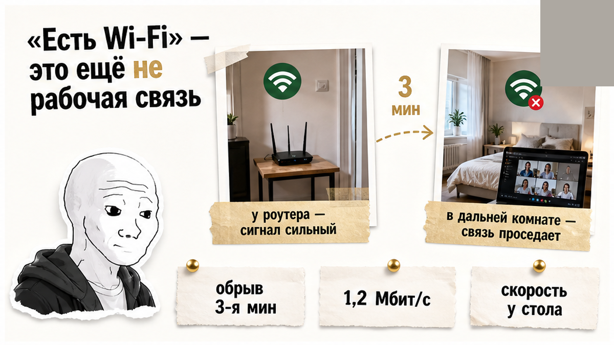
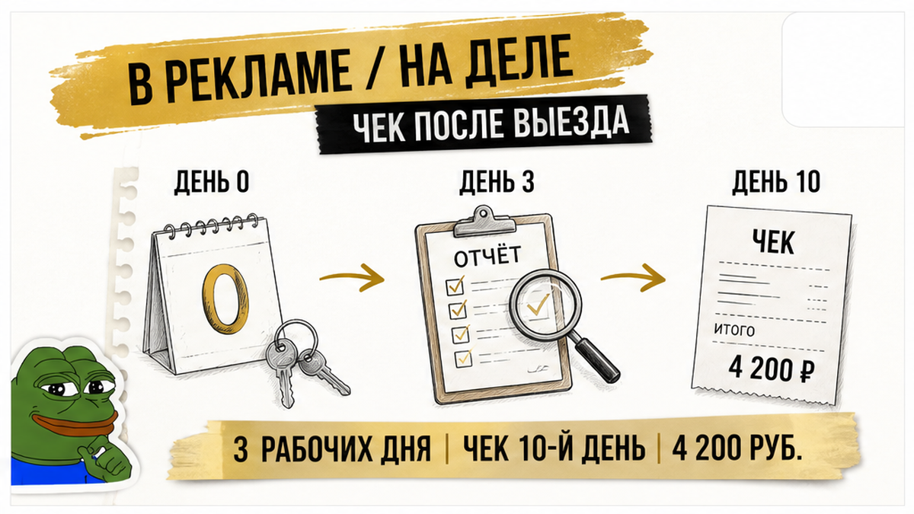
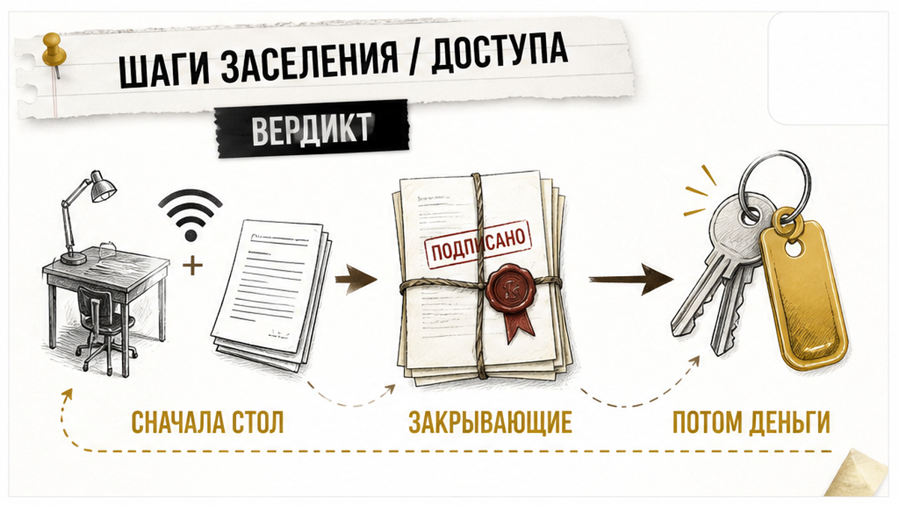
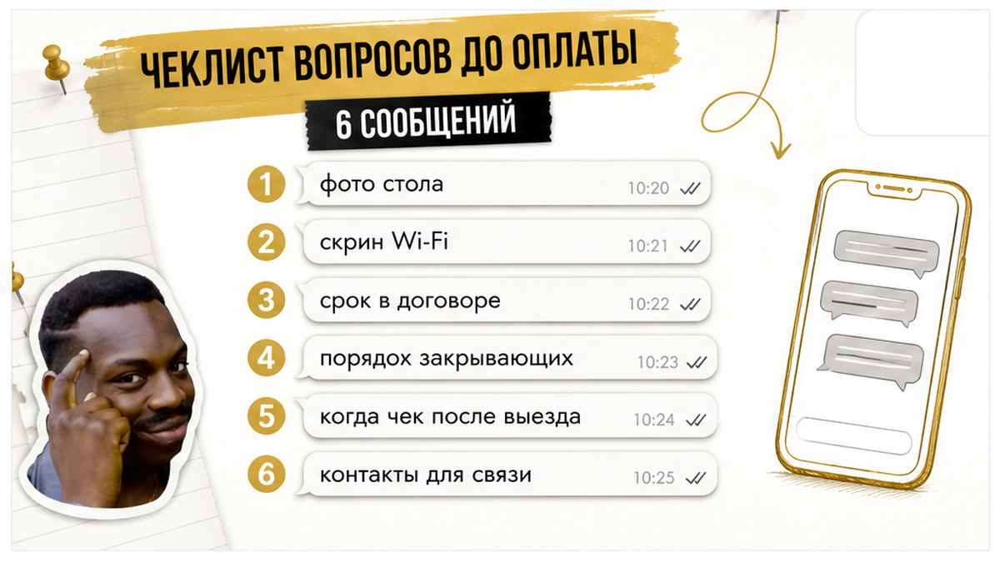
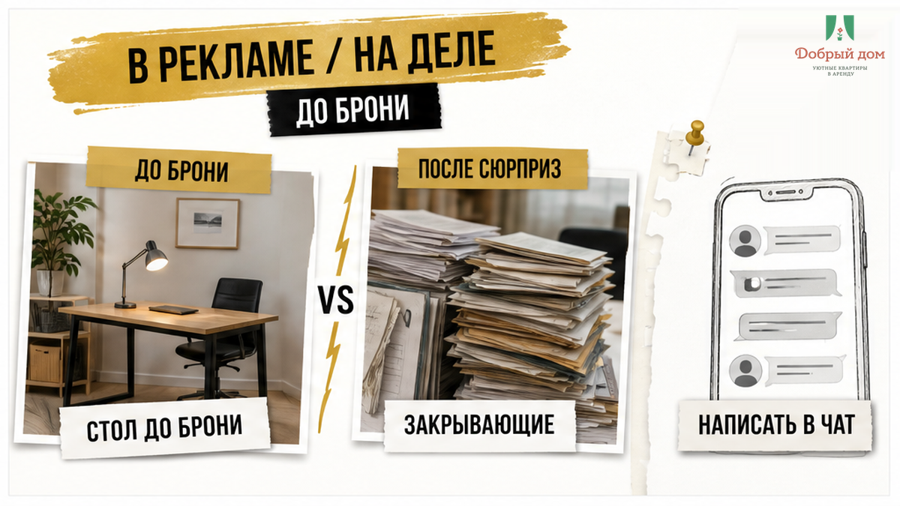

29 августа, 22:10, Тюмень. Инженер выходит из такси у подъезда: командировка, две ночи, утром обязательный видеосозвон в 10:00. Квартира чистая, кровать есть, чайник и полотенца на месте. А вот стола нет — только барная стойка у окна и высокий табурет без спинки. В прихожей и на кухне Wi‑Fi держится уверенно, а в дальней комнате, где можно закрыть дверь и спокойно разговаривать, связь обрывается на третьей минуте. В 22:40 гость пишет хозяину: «Мне нужны чек и акт для бухгалтерии». В 23:05 получает ответ: «Всё сделаем после выезда, не переживайте».
Он и не переживал. Выехал 31 августа в 12:00, вернулся, сел оформлять авансовый отчёт и упёрся в срок: три рабочих дня с даты возвращения. Хозяин соврал? Нет. Чек он прислал — только на десятый день. К этому моменту отчёт уже сдали без этой строки, а 4 200 ₽ за две ночи превратились в личные деньги сотрудника. Сломалась не квартира сама по себе. Сломался порядок: сначала деньги и ключ, потом стол, связь и закрывающие.
Я хост посуточной в Тюмени. Это «Добрый дом». Отвечаем гостям в Telegram и MAX — и в такой командировке вопрос «есть свободно на две ночи?» лучше дополнить ещё несколькими, пока вы стоите не с чемоданом в прихожей.

Поздний заезд сам по себе не проблема. У нас на карточке квартиры на Кармацкого, 5 указано: заезд с 15:00, выезд до 12:00. Если нужен ранний заезд или поздний выезд, это согласовывается заранее, отдельно, до оплаты.
Но в 22:00 гость уже не исследователь. Он доехал, открыл дверь, поставил чемодан, ищет розетку, ставит будильник и думает о завтрашнем созвоне. На спокойную проверку остаётся минут сорок — и то если не пришлось искать вход со двора или разбираться с кодом. В это время барная стойка ещё может показаться рабочим местом, а две палки Wi‑Fi — достаточной связью. Ошибка обнаружится не в момент оплаты, а когда камера уже включена.
Вот где ломается иллюзия: «В объявлении написано, что есть Wi‑Fi и всё необходимое для проживания» звучит как готовое решение. Нет. Так не работает, если вам нужно три часа сидеть с ноутбуком, говорить по видео и потом отчитаться за поездку. Слова в карточке описывают квартиру в целом. Вам нужна конкретная точка: где вы сядете, что увидит камера и выдержит ли связь именно там.
Похожий сбой был в истории с кодом от чужой двери при бесконтактном заселении: вопрос тоже появился уже после перевода. Пока деньги не ушли, уточнение занимает минуту. После — превращается в ночную переписку и попытку спасти уже начавшуюся поездку.

Строка «Wi‑Fi есть» обычно означает ровно то, что написано: роутер установлен, интернет оплачен, подключиться можно. Но в ней нет ни одной цифры и ни слова о дальней комнате. Там, где тихо и можно закрыть дверь, сигнал может быть совсем другим, чем у роутера в прихожей.
Для видеосозвона это не мелочь. Для Zoom в видео 720p индивидуальному звонку нужно около 1,2 Мбит/с. Для группового — примерно 2,6 Мбит/с на отдачу и 1,8 Мбит/с на загрузку. В 1080p требования доходят до 3,8 Мбит/с. Если в вашей комнате отдача проседает до 0,8 Мбит/с, на экране вы будете квадратами, а голос начнёт пропадать через слово.
Поэтому вопрос-отмычка звучит так:
«Где будет стоять ноутбук — и какая скорость Wi‑Fi именно там?»
Нормальный ответ — не «интернет хороший, все довольны». Нормальный ответ — показать место, сделать замер и прислать скриншот. Это короткая проверка, которая отделяет факт от вежливого обещания. Если рабочая комната не подходит, гость узнаёт об этом до оплаты и может выбрать другой вариант, а не искать связь в коридоре утром перед созвоном.
На фотографии барная стойка кажется удобной: ровная поверхность, окно рядом, всё аккуратно. Но для трёх часов работы высокий табурет без спинки — совсем другая история. Спина устаёт, ноутбук стоит слишком высоко или слишком низко, рядом нет места для блокнота и зарядки. Для отпуска это может быть неважно. Для командировки — уже условие проживания.
Стол и стул лучше спрашивать не общими словами, а предметно: «Есть письменный или обеденный стол и стул со спинкой, за которым можно работать три часа? Пришлите фото этого места». Слова «да, конечно» оставляют пространство для двух разных представлений. Один человек думает о полноценном столе, другой — о стойке у окна.
Сразу уточняется и то, что обычно вспоминают слишком поздно: есть ли розетка рядом, можно ли закрыть дверь и не придётся ли работать на кухне, если в квартире вы не один. Это не требование к люксу. Это просьба показать обычное рабочее место до того, как вы оплатили две ночи.

С документами удар оказался дороже, чем с мебелью. Стол можно заменить кухонной поверхностью. Связь иногда выручает через телефон. А если закрывающий документ нужен бухгалтерии к определённой дате, его нельзя заменить удобством или надеждой.
В нашем случае гость вернулся 31 августа. Дальше у него было три рабочих дня на авансовый отчёт. В 22:40 он спросил про чек и акт, в 23:05 получил обещание: «после выезда». Это звучало спокойно, почти заботливо. Иллюзия здесь в другом: «после выезда» для хозяина может означать любое удобное ему время, а для гостя срок уже идёт.
Чек пришёл на десятый день. Хозяин не соврал — он действительно собирался его прислать. Но гость всё равно остался с расходом в 4 200 ₽, который пришлось закрывать своими деньгами. В таких историях намерение не заменяет документ, а переписка с обещанием не превращается в чек только потому, что она сохранена в телефоне.
Поэтому до оплаты стоит письменно зафиксировать три вещи: какие документы выдаются, кто их выдаёт и когда именно они будут у гостя. Если вам нужен договор, акт и чек, не оставляйте это на фразу «сделаем потом». Для командировки «потом» должно иметь дату, особенно когда бухгалтерия ждёт отчёт через три рабочих дня.
Как вы считаете: кто должен первым спросить про закрывающие — гость до оплаты или хозяин ещё при бронировании? Свою позицию можно обсудить в нашем Telegram; там же отвечаем по конкретным ситуациям. Главное — не ждать, что этот вопрос сам всплывёт после выезда.

В этой командировке не было подмены квартиры или намеренного обмана. Была чистая квартира, обычный поздний заезд и хозяин, который прислал чек — только слишком поздно. Но для гостя результат от этого не меняется: утром нужен был созвон, вечером не было нормального места для работы, а после поездки 4 200 ₽ не удалось вовремя подтвердить в отчёте.
Один кейс — один вывод. Сначала выясняем, где будет стоять ноутбук, какая скорость Wi‑Fi именно в этой точке и какой пакет закрывающих придёт в срок. Потом переводим деньги и получаем ключ. Не наоборот.
Та же ошибка встречается и в других точках посуточной аренды. На выезде гость торопится и узнаёт о проблеме с залогом уже после передачи ключей — как в разборе про залог, который не вернули из-за скола на плите. А обещание «рядом» иногда оказывается маршрутом на сорок минут пешком — об этом мы писали в истории про квартиру рядом с вузом. В обоих случаях проверяемое условие оставили на потом.

Это не допрос хозяина и не недоверие к каждой фотографии. Просто пять минут в чате, которые дешевле, чем сорванный созвон или личные деньги в авансовом отчёте.
Если вам нужен отдельный стол, розетка рядом и возможность закрыть дверь, это тоже лучше написать одним сообщением. Не рассчитывайте, что хозяин угадает сценарий командировки по словам «приезжаю по работе». Работа бывает разной: кому-то достаточно открыть почту, а кому-то в 10:00 нужно выйти в обязательный видеозвонок.
Точный состав документов лучше заранее сверить со своей бухгалтерией. У работодателей требования могут отличаться, и после выезда менять договорённость уже неудобно. Сохраните список в чате или в заметках, чтобы не вспоминать о нём в 22:40.

Мы сдаём квартиры в Тюмени, в том числе гостям в командировках. Поэтому вопросы про стол, связь и закрывающие для нас нормальны. До бронирования можно уточнить, где стоит рабочее место, что происходит со связью в дальней комнате и какой заезд возможен вечером.
По конкретной квартире состав пакета документов подтверждаем письменно заранее. Если какого-то условия нет, гость должен услышать это до оплаты: нет отдельного стола — значит, нет; связь в дальней комнате слабее — значит, это нужно знать; документ будет готов не в день оплаты — значит, называем реальный срок. Так честнее, чем отправлять человека в квартиру с ожиданием, которое выяснится в 22:40.
И про деньги без красивых обещаний: 4 200 ₽ за две ночи в этой истории — пример для сравнения, а не единый тариф. Стоимость зависит от объекта и дат, её называем до бронирования.
Если вам нужна квартира в Тюмени на командировку, напишите сразу главный вопрос: где будет стоять ноутбук и какая скорость Wi‑Fi именно там. Менеджер уточнит условия конкретного объекта, документы, поздний заезд и стоимость до оплаты.
Telegram-канал «Добрый дом»
MAX
Сайт
Забронировать квартиру
+7 (993) 574-83-22
Менеджер в Telegram